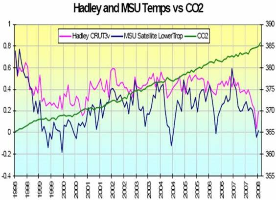
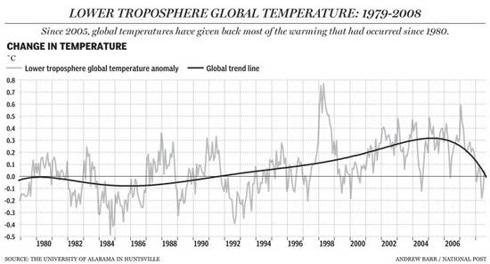

-------- Original Message --------
Subject: [Climate Sceptics] Kyoto Protocol
Date: Wed, 4 Feb 2004 15:46:31 +0000
From: Sonja.B-C <Sonja.B-C@hull.ac.uk>
Reply-To: climatesceptics@yahoogroups.com
To: Margot Wallström <Margot.Wallstrom@cec.eu.int>
Dear Ms Wallstrom
As a long-time researcher into global warming science, policy and politics, and author of a book and many chapters and articles on this subject, I would like to add my voice to those who warn against the EU Commission pursuing an active policy against conventional energy sources and interests for the following reasons:
1. The science base remains more controversial than the IPCC consensus (intergovernmental and bureaucracy driven) is able to convey. It is my impression that uncertainties are growing rather than declining concerning the fossil-fuel related nature of climatic changes.
2. The political consequences of exerting unwarranted pressures on governments like those of Russia and USA (with very different political problems and energy endowments compared to EU) are likely to be detrimental to the EU.
3. Going it alone on pseudo-religious or green ideological grounds will reduce EU commercial competitiveness further.
4. The most likely outcome of the current belief in 'global warming' as a serious threat is an already discernable revival of nuclear power world-wide. Is this your objective? If so, I have no objection but hope that you are aware of the consequences.
Even in a worst case scenario, a well educated, healthy and industrially advanced society, able to trade widely and honestly, is more likely to adapt to climate change than one that is withdrawing into economic autarky and resentment.
Yours sincerely
Sonja Boehmer-Christiansen
----------------------
Dr. Sonja Boehmer-Christiansen
Reader, Department of Geography,
Editor, Energy & Environment (Multi-science,www.multi-science.co.uk)
Faculty of Science University of Hull
Hull HU6 7RX, UK Tel: (0)1482 465349/6341/5385 Fax: (0)1482 466340 Sonja.B-C@hull.ac.uk


Martin Durkin: The Great Global Warming Swindle, CD mit dem sensationellen Klimaschocker-Film, der die mediale Aufklärung rund um den Ökoterrorismus kräftig anfeuerte.
Empfohlene und weiterführende Literatur der Ökokritiker / Klimaleugner / Klimaschutzskeptiker: